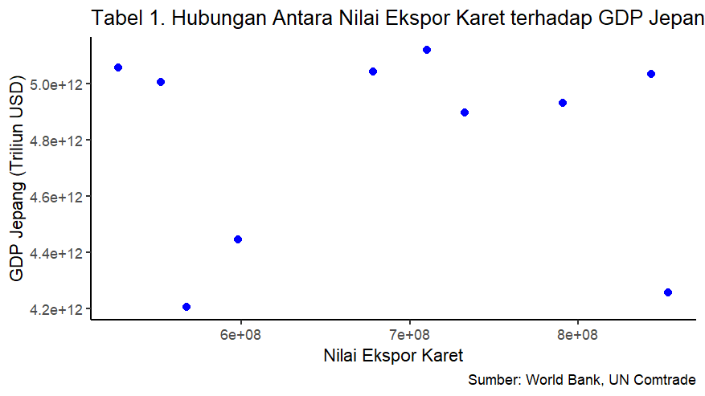

library(tidyverse)
library(readxl)
library(ggplot2)Pengaruh Hubungan Nilai Ekspor Karet Alam Indonesia Terhadap GDP Jepang Tahun 2014–2023
Metode Penelitian Politeknik APP Jakarta

1 Pendahuluan
1.1 Latar belakang
Indonesia merupakan salah satu negara penghasil karet terbesar di dunia, menempati posisi kedua setelah Thailand dalam hal produksi karet alam. Sebagian besar produksi karet Indonesia berasal dari perkebunan yang terletak di Sumatra, Kalimantan, dan Sulawesi. Karet alam menjadi salah satu komoditas unggulan dalam ekspor Indonesia, karena tanaman karet memiliki kemampuan untuk berproduksi sepanjang tahun, dan hampir seluruh wilayah Indonesia memiliki kondisi yang sesuai untuk budidaya karet.
Jepang merupakan salah satu negara tujuan ekspor terbesar bagi karet Indonesia. Permintaan karet alam dari Jepang sangat tinggi, terutama disebabkan oleh Jepang yang merupakan produsen utama otomotif global yang terus mengalami pertumbuhan pesat. Karet alam digunakan sebagai bahan baku dalam berbagai komponen kendaraan, menjadikan kebutuhan terhadap komoditas ini sangat besar. Berdasarkan data dari Badan Pusat Statistik (BPS), Jepang secara konsisten menjadi salah satu negara pengimpor karet terbesar dari Indonesia. Pada tahun 2019, volume ekspor karet Indonesia ke Jepang mencapai 493,7 ribu ton.
Faktor yang mendorong permintaan tinggi ini adalah kebutuhan industri otomotif Jepang yang besar, di mana sektor ini memegang peranan penting dalam ekonomi Jepang. Jepang membutuhkan karet alam untuk memenuhi kebutuhan pembuatan berbagai komponen kendaraan, yang merupakan sektor industri utama negara tersebut.
1.2 Ruang lingkup
Pembahasan ini difokuskan pada pengaruh dua faktor utama terhadap ekspor karet alam Indonesia ke Jepang, yaitu nilai ekspor dan GDP Jepang. Penelitian ini menggunakan data periode 2014 hingga 2023 untuk menganalisis bagaimana perubahan dalam nilai ekspor karet alam dan GDP Jepang dapat memengaruhi nilai ekspor Indonesia. Nilai ekspor mencerminkan seberapa besar kontribusi perdagangan karet alam Indonesia terhadap perekonomian, sementara GDP Jepang menggambarkan keadaan ekonomi negara tujuan ekspor yang mempengaruhi kemampuan dan impor pasar Jepang. Perubahan dalam GDP Jepang dapat memengaruhi daya beli dan kebutuhan industri Jepang terhadap karet alam, yang menjadi bahan baku utama dalam berbagai sektor, termasuk otomotif dan manufaktur.
1.3 Rumusan masalah
Bagaimana pengaruh nilai ekspor karet Indonesia ke Jepang terhadap GDP Jepang dalam periode 2014-2023?
Bagaimana pengaruh bersama antara nilai ekspor karet alam Indonesia ke Jepang dan GDP Jepang terhadap perkembangan ekonomi Jepang selama periode 2019-2023?
1.4 Tujuan dan manfaat penelitian
Tujuan analisis ini fokus pengaruh dua faktor utama terhadap ekspor karet alam Indonesia ke Jepang, yaitu nilai ekspor dan GDP Jepang. Berdasarkan hasil analisis data periode 2014-2023, ditemukan bahwa nilai ekspor karet Indonesia berpengaruh signifikan terhadap GDP Jepang. Hal ini menunjukkan bahwa perubahan dalam ekspor karet Indonesia dapat memengaruhi pertumbuhan ekonomi Jepang, yang dipengaruhi oleh kebutuhan di sektor industri.
Manfaat penelitian dapat menjadi acuan bagi pelaku industri karet di Indonesia untuk merencanakan strategi ekspor yang lebih tepat dan menyesuaikan dengan permintaan pasar Jepang. Selain itu, hasil penelitian ini juga memberikan wawasan yang berguna bagi akademisi untuk memahami hubungan antara perdagangan komoditas dan perekonomian negara pengimpor, khususnya dalam konteks ekspor Indonesia ke Jepang.
Penelitian ini memberikan pemahaman yang lebih dalam mengenai bagaimana ekspor dapat memengaruhi ekonomi Jepang dan memberikan informasi yang relevan bagi industri untuk merespons kondisi pasar dan ekonomi global yang dinamis.
1.5 Package
Ini tidak wajib ada di tulisan anda tapi anda dapat menunjukkan Packages yang digunakan antara lain sebagai berikut:
2 Studi pustaka
Karet alam merupakan salah satu komoditas perkebunan yang sangat penting, baik sebagai sumber pendapatan, peluang kerja, maupun devisa. Karet juga berperan sebagai pendorong pertumbuhan ekonomi di wilayah sekitar perkebunan, serta mendukung pelestarian lingkungan dan sumber daya alam (Litbang Deptan, 2007). Karet alam memiliki potensi besar untuk dikembangkan di Indonesia, dengan produk karet yang dapat dimanfaatkan untuk mendanai berbagai kegiatan di sekitar lingkungan. Setelah diproses, produk karet bisa digunakan langsung atau melalui tambahan proses industri guna meningkatkan nilai tambahnya (Budiman, 2004).
Indonesia dikenal sebagai negara yang kaya akan sumber daya alam, termasuk karet. Berdasarkan data dari Food and Agriculture Organization (FAO), Indonesia menempati posisi kedua sebagai produsen karet alam terbesar di dunia setelah Thailand, dengan kontribusi mencapai 32% dari total produksi karet alam global (FAO, 2020). Sejak awal revolusi industri, karet alam telah memberikan dampak besar terhadap perekonomian global, karena digunakan sebagai bahan baku penting dalam berbagai industri manufaktur untuk menghasilkan produk-produk yang bernilai tinggi (Raju, 2016).
Karet alam menjadi komoditas strategis yang penting dalam perdagangan internasional, khususnya di negara-negara dengan industri otomotif dan manufaktur besar seperti Jepang. Keberadaan karet alam di Indonesia memberikan peluang besar bagi negara ini untuk meningkatkan ekspor dan memperkuat posisinya dalam pasar global.
3 Metode penelitian
3.1 Data
Data yang digunakan yaitu nilai ekspor karet dari Indonesia ke negara Jepang dan GDP Jepang untuk periode tahun 2014-2023.
| Tahun | Nilai Ekspor (USD) | GDP Jepang (Triliun USD) |
|---|---|---|
| 2014 | 732,687,140 | 4896994405353,29 |
| 2015 | 598,140,076 | 4444930651964,18 |
| 2016 | 551,955,512 | 5003677627544,24 |
| 2017 | 790,586,174 | 4930837369151,42 |
| 2018 | 678,125,098 | 5040880939324,86 |
| 2019 | 709,889,286 | 5117993853016,51 |
| 2020 | 526,852,988 | 5055587093501,59 |
| 2021 | 843,272,361 | 5034620784584,98 |
| 2022 | 853,380,990 | 4256410760723,75 |
| 2023 | 567,511,209 | 4204494802431,55 |
Penelitian ini menggunakan data sekunder dengan data timeseries selama periode 2014–2023 yang diolah dari UN Comtrade dan World Bank.
library(readxl)
setwd("C:/Users/Janny Aisyah/Pictures/SEMESTER 3/Tugas Metopel")
data4<- read_excel('data4.xlsx')
head(data4)# A tibble: 6 × 3
Tahun `Nilai Ekspor (USD)` `GDP Jepang (Triliun USD)`
<dbl> <dbl> <dbl>
1 2014 732687140 4.90e12
2 2015 598140076 4.44e12
3 2016 551955512 5.00e12
4 2017 790586174 4.93e12
5 2018 678125098 5.04e12
6 2019 709889286 5.12e12ggplot(data = data4, aes(x = `Nilai Ekspor (USD)`, y = `GDP Jepang (Triliun USD)`)) +
geom_point(color = "blue", size = 2) +
labs(
title = "Tabel 1. Hubungan Antara Nilai Ekspor Karet terhadap GDP Jepang",
x = "Nilai Ekspor Karet (USD)",
y = "GDP Jepang (Triliun USD)",
caption = "Sumber: World Bank, UN Comtrade"
) +
theme_classic()
3.2 Metode analisis
Dalam penelitian ini menggunakan Metode yang digunakan dalam penelitian Ordinary Least Squares (OLS) dengan satu variabel independen. Penelitian ini bertujuan untuk menganalisis hubungan antara nilai ekspor karet alam Indonesia ke Jepang dan GDP Jepang. Model yang digunakan dalam analisis ini dapat dijelaskan dengan persamaan regresi berikut:
yt= β0 + β1xt +ϵyt adalah GDP Jepang dan xt adalah nilai ekspor karet.
4 Pembahasan
4.1 Pembahasan masalah
Dalam penelitian ini digunakan metode regresi Ordinary Least Squares (OLS) untuk menganalisis hubungan antara Nilai Ekspor Karet Alam Indonesia dan GDP Jepang selama periode 2014 hingga 2023. Data kuantitatif tersebut digabungkan untuk analisis regresi linier dengan satu variabel independen (Nilai Ekspor Karet Alam) dan satu variabel dependen (GDP Jepang). OLS dipilih untuk mengestimasi hubungan linear yang efisien. Seperti data yang ditunjukkan pada tampilan berikut:
setwd("C:/Users/Janny Aisyah/Pictures/SEMESTER 3/Tugas Metopel")
data4<- read_excel('data4.xlsx')
head(data4)# A tibble: 6 × 3
Tahun `Nilai Ekspor (USD)` `GDP Jepang (Triliun USD)`
<dbl> <dbl> <dbl>
1 2014 732687140 4.90e12
2 2015 598140076 4.44e12
3 2016 551955512 5.00e12
4 2017 790586174 4.93e12
5 2018 678125098 5.04e12
6 2019 709889286 5.12e124.2 Analisis masalah
reg <- lm(`GDP Jepang (Triliun USD)` ~ `Nilai Ekspor (USD)`, data = data4)
summary(reg)
Call:
lm(formula = `GDP Jepang (Triliun USD)` ~ `Nilai Ekspor (USD)`,
data = data4)
Residuals:
Min 1Q Median 3Q Max
-5.909e+11 -2.392e+11 1.690e+11 2.397e+11 3.187e+11
Coefficients:
Estimate Std. Error t value Pr(>|t|)
(Intercept) 4.780e+12 7.179e+11 6.658 0.000159 ***
`Nilai Ekspor (USD)` 2.732e+01 1.033e+03 0.026 0.979555
---
Signif. codes: 0 '***' 0.001 '**' 0.01 '*' 0.05 '.' 0.1 ' ' 1
Residual standard error: 3.748e+11 on 8 degrees of freedom
Multiple R-squared: 8.737e-05, Adjusted R-squared: -0.1249
F-statistic: 0.000699 on 1 and 8 DF, p-value: 0.9796Hasil regresi, model yang dapat dimasukkan adalah sebagai berikut:
GDP= 4.780e+12 + 2.732e+01×t + ϵ
Hasil regresi konstanta sebesar 4.780e+12 menggambarkan nilai GDP Jepang (Y) pada saat Nilai Ekspor Karet (X) adalah 0. Koefisien regresi untuk Nilai Ekspor Karet yang sebesar 27.32 menunjukkan bahwa setiap kenaikan 1 USD dalam Nilai Ekspor Karet diperkirakan akan meningkatkan GDP Jepang sebesar 27.32 Triliun USD. Meskipun demikian, dengan p-value yang sangat tinggi (0.9796), pengaruh Nilai Ekspor Karet terhadap GDP Jepang cenderung lemah atau kurang signifikan.
5 Kesimpulan
Berdasarkan hasil analisis regresi, nilai konstanta sebesar 4.780e+12 menunjukkan estimasi nilai GDP Jepang ketika nilai ekspor karet Indonesia berada pada titik nol. Selain itu, koefisien regresi sebesar 27.32 menunjukkan bahwa setiap kenaikan nilai ekspor karet sebesar 1 juta USD diperkirakan dapat meningkatkan GDP Jepang sebesar 27.32 juta USD.
Namun, tingkat signifikansi statistik yang ditunjukkan oleh p-value sebesar 0.9796 (lebih besar dari 0.05) menunjukkan bahwa hubungan ini kurang kuat secara statistik. Hal ini juga didukung oleh nilai R-squared yang sangat rendah, yaitu hanya 0.0087%, yang berarti variabel nilai ekspor karet Indonesia hanya mampu menjelaskan kurang dari 1% variasi dalam GDP Jepang.
Kesimpulannya, meskipun secara matematis terdapat hubungan positif antara nilai ekspor karet Indonesia dan GDP Jepang, hubungan tersebut tidak cukup signifikan untuk menunjukkan pengaruh yang kuat selama periode 2014–2023. Faktor lain kemungkinan memiliki peranan yang lebih dominan dalam memengaruhi GDP Jepang.
6 Referensi
Andriantoni, N., Hidayat, W., & Arifin, Z. (2020). Pengaruh GDP dan nilai tukar negara mitra dagang terhadap ekspor karet Indonesia. Jurnal Ilmu Ekonomi JIE, 4(4), 762–776. https://doi.org/10.22219/jie.v4i4.11393
Apipudin, M. (2018). Analisis faktor-faktor yang mempengaruhi ekspor karet alam Indonesia ke negara Jepang. 1–65.
Christiadi, R., Institut, S., Bogor, P., Desi, Y., Silalahi, A., Pertanian Bogor, I., Intan, R., Institut, S., Karo, R., Sitepu, K., Pertanian, I., Alamat, B., & Kumbang, J. (2024). Analisis daya saing ekspor karet Indonesia ke negara Amerika Serikat dan Jepang. Jurnal Ilmiah Ekonomi Dan Manajemen, 2(6), 277–286.
Dahlia, N. A. (2016). Analisis faktor-faktor yang mempengaruhi volume ekspor karet remah (crumb rubber) ke Cina dan Jepang. Skripsi.
Intan, R. (2020). Analisis pengaruh produksi karet alam, harga, dan kurs terhadap ekspor karet remah (crumb rubber) Indonesia tahun 2010-2021. Bab I, 1–16.
Jhon, F. F. (2020). Analisis ekspor karet dan kopi Indonesia ke negara Jepang dan negara Singapura (pendekatan model gravity). Jurnal Education and Development, 8(3), 932–937.
Kemendag. (2023). Realisasi ekspor karet dan produk karet Indonesia tahun 2018-2023 (Januari-Mei). 1–10.
Pertiwi, N. A. M. (2019). Analisis faktor-faktor yang mempengaruhi permintaan karet alam Indonesia di Tiongkok.
Indonesia, B. P. S. (n.d.). Ekspor Karet Remah menurut Negara tujuan Utama, 2012-2023 - Tabel statistik. Badan Pusat Statistik Indonesia. https://www.bps.go.id/id/statistics-table/1/MjAzMCMx/ekspor-karet-remah-menurut-negara-tujuan-utama–2012-2022.html
World development indicators. DataBank. (n.d.). https://databank.worldbank.org/reports.aspx?source=2&series=NY.GDP.MKTP.CD&country=JPN
United Nations. (n.d.). UN Comtrade. United Nations. https://comtradeplus.un.org/TradeFlow?Frequency=A&Flows=X&CommodityCodes=4001&Partners=392&Reporters=360&period=2015&AggregateBy=none&BreakdownMode=plus